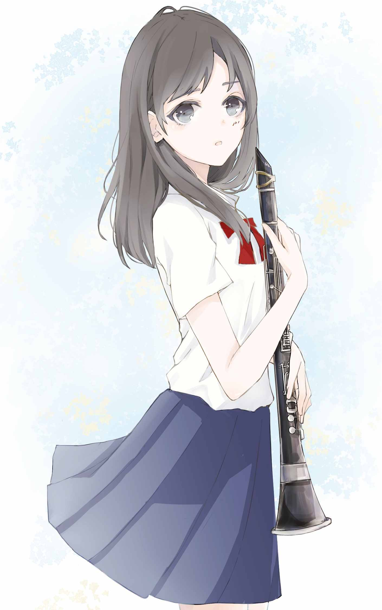

| アネモネの季節 花言葉シリーズ | |
| 立花紫陽 | |
| 朝来書房 (2019) | |
この作品はフィクションです。
実在の人物や団体とは一切関係ありません。
本作品の全部または一部を無断で複製、転載、配信、送信したり、ウェブサイト上に転載することを禁止します。
また、本作品の内容を無断で改変、改ざん等を行うことも禁止します。
有償、無償にかかわらず本作品を第三者に譲渡することはできません。
本作品を示すサムネイルなどのイメージ画像は、再ダウンロード時に予告なく変更される場合があります。
本作品は縦書きでレイアウトされています。
また、ご覧になるリーディングシステムにより、表示の差が認められることがあります。
アネモネの季節
とぎれた音が再び流れ始める。
俺は壁に頭をくっつけて、やや上を見上げる。
その音がよく聞こえるように。
すると隣に座っていた友人の田中がつぶやく。
「先輩、熱心だよな」
「そうだな」
応じるのは前に座る井崎だ。
「俺らが不真面目過ぎるんじゃねえの？」
「それな」
言って二人は笑い合うが、俺は笑う気になれない。
この音を少しでも聞き逃したくない。
「笠井。食わねえのか」
井崎が俺に言葉をかける。
手に持っていた菓子パンの存在を思い出した。
「ああ、食うよ」
パンを一口かじって咀嚼しながら、耳は漏れ聞こえてくる音に集中している。
夏休みの体育館は冷房が利いているものの、俺のもたれている壁の窓は開けられている。
吹き抜けになっている中庭から聞こえてくる音を聞くためだ。
三年生の先輩はあと二週間ほどで引退だ。悔いを残したくないのだろう。
時間を惜しんで練習している。
それに対して俺たち一年生は、二階の廊下に腰を下ろして先輩の練習する音をBGMにして昼食をとっている。
「やってられねえよな。昼からも練習して、夜もあるんだぜ」
「大会前だから仕方ないだろ」
「それでもさ。合宿なんか参加したくなかったな。大会が終わったら辞めるかな」
「また始まった」
井崎のいつものぼやきを、田中が軽く笑って受け流す。
「それより、最後だからって朝丘先輩に告る奴、いると思うか？」
「いねえだろ。いたらそいつ、男子全員でハブられるぜ」
「それな」
「むしろ、あの先輩に告ろうってよくぞ決めたなって思うぜ。あの人、近寄りにくいもんな」
「まあな。......なあ、笠井。そういうのってなんて言うんだっけ」
田中が俺に尋ねる。
先輩の音を聞くのに夢中で、二人の話をあまり聞いていなかった。
「悪い。何だって？」
「聞いてなかったのかよ。朝丘先輩みたいな、美人で綺麗系なんだけど近寄りにくい女の人のこと、なんて言うんだった？」
ちょっと考えて、俺は答える。
「高嶺の花」
二人は「ああ」と嘆息する調子で同意する。
「ほんとそれだよな。あんな美人を彼女にできれば自慢できるよな。でも誰にも落とせないよな」
「皆で遠くから眺めてるだけでいいんだよ。もし言い寄ったりしてみろ。三年の先輩たちからボコられるぞ」
「それな」
二人の軽口は続いているが、俺は会話に混ざる気にはなれない。
その高嶺の花に憧れている一人だからだ。
本当に好きで、気がつけば目で追ってしまう。
さっきから朝丘先輩は同じフレーズばかりを練習している。
納得のいく演奏ができないらしい。
「俺らも食ったら、少しは練習するか」
田中が言うが、井崎は「時間までここでまったりしようぜ」と答える。
一年生の中で一番やる気が低く、辞めようと言っているのはもはや口癖のようだ。
「体育系クラブじゃねえんだからさ。今どき流行らねえよ。朝から晩まで練習漬けなんて。それも吹奏楽部だぜ？」
これには田中も苦笑いで応えている。
「ああ、帰宅部にしとけば良かったな。そうしたら今頃、部屋で好きな動画やアニメとか見て過ごせるのに」
奴は何気なく言っているのかもしれないが、聞いているこちらはいつもウンザリさせられる。
だから俺は、井崎とはあまり関わりたくない。だが何となく友達らしい付き合い方をしないといけない雰囲気があって、こうして一緒にいるだけだ。
俺は再び壁に頭をつけて、よく聞こうとし始める。
先輩が奏でる音を、少しでも記憶に刻んでおきたくて。
◆
朝丘恭子先輩を一言で表現するなら、孤高という言葉がよく似合う。
俺たち男子からすれば高嶺の花だが、それは同時に孤高だとも思う。
部長でこそないものの、顧問の先生に代わって時には俺たちを指導する、コンサートマスターという役職に就いている。
各パートの音符が書かれた楽譜を読みこなし、自分たちの表現しようとする音楽を追求する。時には顧問の先生と一音の解釈で議論をすることもあるそうだ。
それに、楽曲全体のメインメロディを担当することの多い、クラリネットという楽器のファーストというパートを担当している。
井崎と田中が言っていたように、近寄りにくい雰囲気があるのも確かだ。
自分から近寄りにくいのはわかる。だが向こうから近寄ってきた場合は、どうすれば良いのだろう？
合宿二日目の夕方。
俺は先輩がいないのを良いことに、中庭に出て一人で練習していた。
銭湯へ行ったものの、その前の練習時間に朝丘先輩に指導された箇所が気になって早めに戻ってきた。
失望の眼差しを向けられた気がした。
あのときに感じた心の痛みは、今も続いている。
先輩と一緒に演奏できる時間は残り少ない。少しでも上手くなって、良い思い出にしたい。
気ばかり急くものの、そう簡単にできるようになれば苦労はしない。
できないから余計に気が急く。
悪循環だ。
また同じ箇所を間違えて、俺が大きくため息をついたとき、後ろで扉が開く音がした。
振り返ると、朝丘先輩が降りてきた。
「あっ、すみません。邪魔ですよね。出ます」
「いいわよ。私だけの場所じゃないし。続けて」
何の感情も感じられない声で先輩は告げる。
俺と少し距離を空けて座り、練習を始める。
マイペースなのか、ものすごい集中力なのか。
気を取り直して練習を再開する。
しかし緊張からか、普段なら間違わない箇所まで間違う。
仕方がないだろう。
憧れの先輩と狭い空間に二人きり。それもすぐ近くで。
先輩も銭湯帰りなのだろうか。夏の蒸し暑い風に乗って、良い匂いがほのかに漂ってくる。
こんな状況で集中して練習なんかできない。
いや、集中しなきゃいけないのはよくわかっているのだけれども。
しばらく無言で練習をしていたが、朝丘先輩の音がいつしか消えていることに、俺はしばらく気付かなかった。

「笠井」
声をかけられたときは、驚きでイスから飛び上がりそうだった。
「はい！」
「さっきからどうしたの？ ミスばっかり」
「すみません」
うなだれる。
上手く演奏できるところとは言わないまでも、せめて恥ずかしくないところは見せたかった。
実際はものすごく恥ずかしいところを見られてしまった。
「そこ、前の練習中に私が指摘したところでしょ？」
「え？ ......あ、はい。そうです」
「できないことをできるようになるために練習するのは、良いことね」
慰められているのか同情されているのか、よくわからない。
それでも俺は、朝丘先輩とこんなに近くで話していることが嬉しい。
「横であんたが間違え続けるから、気になって集中できないわ。こっちへ来なさい」
一瞬、何を言われたのかわからなかった。
「えっ？」
「私の隣に来なさい。一緒に練習するわよ」
「えっ」
俺の驚きをどう受け取ったのか、先輩の目がわずかに細められた気がした。
「嫌ならいいのよ。それとも、私がいるから集中できない？ それなら私が別の場所へ行くわ」
先輩が立ち上がりかける。
俺は慌てて「いいえ！」 と首を振る。
「その、教えてもらえるのは嬉しいんですけど、先輩、自分の練習はいいんですか？ 他パートの俺の練習に付き合ってもらうのも、何か悪いなあって」
「これでもコンマスだからね。練習するならほら、早く来なさい」
急かされて、俺はイスと譜面台を持って先輩の隣へ移動する。
先輩の隣に座るなど初めてだ。
近くで見たら、意外と髪が長いなとか、良い匂いがもっとよくわかるなとか一瞬思ったけれど、すぐに指導が始まる。
「まず、ここまでやってみて」
俺の譜面をのぞき込みながら、先輩が細い指でさし示す。
その指の細さにもドキドキしながら、俺はなんとか楽器を構える。
先輩の示した箇所まで演奏する。
数時間前に指摘された箇所も含まれており、当然間違えた。
「すみません。上手くできなくて」
「上手くやろうとするから上手くいかないのよ。自分にできる精一杯をやろうって思いなさい」
もう一回、と指示されて俺はもう一度演奏する。
同じ箇所を間違える。
「そんなに難しいかしら？ ちょっとこれ持ってて」
先輩が俺にクラリネットを差し出す。
俺はよくわからず受け取る。
「それ貸して」
「えっ？」
「サックス。貸して」
何も考えられず、言われるままに俺は自分の楽器を先輩に渡す。
先輩は楽器の吹き口、マウスピースを少し調整して、口に当てる。
「あ」
思わず声が出た。
「何？」
「いえ、何でもないです」
間接キス？ などと思って声が出たなんて。俺は中学生か。
でも好きな先輩が相手なんだから、意識してしまう。
俺が自分にいいわけしていると、先輩が俺の譜面を見ながら、サックスを吹き始める。
クラリネット担当なのに、サックスも吹けるとは知らなかった。
しかも俺よりずっと良い音色だ。指使いも上手い。
何だか悔しい。
もっと聞いていたいと思い始めたころ、俺が間違えて先輩が指摘した箇所に来た。
注意して聞く。
ところが、先輩も間違えた。
「あれ」
首を傾げ、もう一度その箇所を演奏するものの、やはり間違う。
「もう一回」
三度目もやはり先輩は間違えた。
俺はどうしていいかわからない。
先輩でも間違うんですねとか、楽器が違うのにすごいですねとか言うべきなのだろうか。
言ったら言ったで馬鹿にしていると受け取られないだろうか。
悩んでいるうちに、先輩が楽器を口から離す。
「うん。これは難しいわね。一年生にはきついかも。私が言ったこと、謝るわ。ごめん」
先輩が軽く頭を下げるので、俺は慌てて「いえ、そんな！」 と取り繕う。
「驚きました。先輩、サックス担当じゃないのに上手いですね」
俺に楽器を返し、クラリネットを受け取りながら、先輩は苦笑いを浮かべて俺をまっすぐ見つめる。
「私、入部してから夏までは、つまり二年前のこの時期まではサックス吹いてたのよ。でも夏の大会が終わったら、クラリネットの同級生の子が辞めちゃったの。誰か移りたい者はって先生が聞いたの」
「はい」
「元々入部したときはクラリネット志望だったんだけど、ジャンケンして負けたの。それで私は第二志望のサックスにいったんだけど、思いがけず第一志望だったクラの席が空いたから、名乗り出たの」
「そうだったんですね。全然知らなかったです」
「だから今でも吹けるって思ってたんだけど、無理だったわ。それに自分でやってみてわかったけど、ここのフレーズ、一年生には難しいわね。きついこと言っちゃった」
「いえ。吹けない自分が悔しいです。言われて、むしろやる気が出ました」
「そう？ なら良かった。そうやって頑張る子、私は好きよ」
心臓が大きくはねる。
そういう意味じゃない。決して、先輩はそういう意味で言ったんじゃない。
わかっているのに、俺の心は暴れまくっている。
勘弁してくれ。不意打ちにもほどがある。
「じゃあ残り時間はお互いに自分の練習しましょ」
先輩は自分が言った言葉を気にした風もなく、俺から楽器を受け取ると、ふたたび練習を再開した。
俺はイスを持って元いた場所へ戻る。
腰を下ろして練習を再開するものの、平常心でいられるわけがない。
結局、普段なら間違うはすのない箇所すら間違いまくって、先輩に怪訝な目で見られた。
耳の奥には、先輩の一言がずっとこだましている。
そういう意味でないはずなのに、俺は舞い上がってしまっている。
中学生か。
改めて自分に言って呆れようとするものの、俺の胸に降って湧いた甘く切なく締め付けるものは、いつまで経っても俺を解放してくれなかった。
◆
合宿を終えたら、大会まで残りわずか十日ほどだ。
本番が目前になり、部内の雰囲気は合宿前とは違ってきている。
それはおそらく、あのきつい合宿を最後まで乗り切ったという自信がなせる業だろう。
三年生たちの気迫は、日に日に鬼気迫るものになっている。
気圧されないよう、俺も必死で練習する。
朝丘先輩は淡々としているようで、個人練習中は前より近寄りにくい雰囲気だ。
昼休みに中庭で先輩が練習するその音を、俺たちは今日も二階で聞きながら雑談を交わしている。
井崎と田中は合宿前と比べても変わらない。いや、井崎は練習にさらに身が入らなくなっている。俺が見ていてもわかるほどだ。
全員が本番を目前に控え、ピリピリしている。それに水を差すような奴の態度が気に食わない。
腹に据えかねていると言ってもいい。
その井崎は、今も俺の前でヘラヘラと笑いながら田中に向けて喋っている。
「俺、午前中の練習で朝丘先輩に言われたんだよ。『このパートを演奏してみなさい』って。それでやったら、『全然ダメね。できるようになるまで外で練習して来なさい』って言われちまった」
「マジかよ。朝丘先輩怒らせたの？ お前？」
田中は律儀に井崎の話に付き合ってやっている。
俺は不機嫌を押し隠しながら黙々と昼食を摂る。
「知らねえよ。で、外で練習して来いって言われたら行くしかねえじゃん？ だから中庭に行って、ずうっとスマホいじってたぜ」
「サボってたのかよ」
田中が驚いたように聞き返すも、井崎はヘラヘラ笑いを消さず、むしろ誇らしげに言う。
「そりゃサボるっしょ。誰も見てねえんだからさ」
黙って聞いていたが、我慢の限界だった。
「おい井崎」
気がつけば俺は立ち上がり、前に座る井崎の胸ぐらを掴んでいた。
「三年生は最後の大会なんだ。二年生も、俺たち一年生も必死に練習してる。なのにお前は何だ？」
「何だよ笠井。離せよ」
「うるせえ。朝丘先輩が練習しろって言ったのにサボってた？」
「離せつってんだろ」
「ふざけるのもいい加減にしろ！」
「離せよ！」
井崎が俺の腕を乱暴に払う。
瞬間、俺の中で何かが切れた。
井崎の頬に右拳を叩き込む。
そのまま馬乗りになり、左手で奴の胸ぐらを掴んで床に押さえつけ、右拳で殴り続ける。
井崎は最初、何が起こったかわからないようだったが、すぐに我に返って暴れ始める。
「てめえ笠井！」
井崎は抵抗するものの、俺は胸ぐらを押さえつけ、殴り続ける。
「おいやめろ！ 落ち着け笠井！」
田中が止めに入るが、構わない。
「お前に！ 大会に出る、資格なんか、ねえよ！ 辞めちまえ！」
「うるせえ！ お前に言われる筋合いねえよ！」
井崎が俺の胸ぐらを掴み返す。
気付けば奴の黒髪が目前に迫っていた。
鼻に激痛が走る。
頭突きを食らったと理解したのは、一瞬あとだ。
痛みに怯んでしまったのか。井崎の胸ぐらを離してしまった。
「笠井！ やってやるよお前！」
「やめろ井崎！ 笠井も！ 落ち着け！ 離れろ！」
田中が必死に俺たちを引きはがそうとするも、互いにスイッチの入った俺たちは止まらない。
井崎の拳が左頬に入る。
俺は尻もちをつく。
「うおおっ！」
俺は井崎の腹に頭突きをする。
勢いを利用して立ち上がり、逆に尻もちをついている井崎の上に再び馬乗りになる。
「朝丘先輩の、必死に練習する姿、見てもお前は、何も思わねえのか！ 馬鹿野郎！」
俺は叫びながら井崎の顔面に拳を叩き込もうとするものの、奴は両腕で顔面をガードし続ける。
「笠井やめろ！ 落ち着け！」
田中が俺の背後に回り、羽交い締めにして井崎から引き剥がす。
「うるせえ！ こいつだけは許せねえ！」
叫んだとき、尻もちをついて口元を拭う井崎の後ろに、朝丘先輩が立っているのが見えた。
「あんたたち何してるの！」
その声が朝丘先輩のものだとわかったのだろう。井崎が振り向く。
「うるせえ朝丘！ 何が全然ダメだ、偉そうに言いやがって。三年だからって調子乗ってんじゃねえぞ！」
井崎は標的を俺から朝丘先輩に変えたらしい。
ふらつきながら立ち上がって、駆けていく。
朝丘先輩も危険を察知したのだろう。さっと踵を返し、階段を駆け下りていく。
「待てコラ！ 井崎！」
叫ぶが井崎は待たない。
「離せ田中！」
「何言ってる！ 落ち着け笠井！」
「落ち着いてる！ 離せ！」
「落ち着いてねえから言ってるんだろ！」
そのうちに階下で大勢の怒鳴り声が聞こえ始めた。
俺たちの声を耳にした誰かが飛び出して来たのだろう。
俺は朝丘先輩が井崎に捕まっていないことを願いながら、離せと叫び続けるしかなかった。
◆
その日を、俺は気怠い気分で迎えた。
今日は吹奏楽コンクール本番。しかし俺は出場できない。
暴力事件のためだ。
本来なら吹奏楽部自体が活動禁止を言い渡されてもおかしくなかった。
しかし夏休み中の体育館内での出来事であったことと、部員以外に目撃者がいなかったこと、それから顧問の先生と部員一同の嘆願により、何とか活動存続が許可された。
当事者の俺と井崎にはもちろん処分が下った。
夏休み期間中の部活動禁止と、二学期開始日から三日間の停学。
部活禁止は俺だけだ。井崎は事件当日に退部した。
俺と井崎が抜けた影響はどれほどのものだろう。
部員たちからは普段通り連絡が来るものの、俺は返信していない。
事件後も練習を続けた部員たちに、迷惑を掛けた身でこれまでと同じように接して良いとは思えない。
事情を知った部員、特に一年生と二年生からは責めよりも励ましの声がたくさん届いている。
中にはもちろん、特に三年生から「最後の舞台を台無しにするつもりだったのか」という叱責もあった。甘んじて受けるしかないと思う。
しかし、一番聞きたい朝丘先輩本人の言葉は届いていない。
本人と連絡先を交換していないからだが、きっかけが朝丘先輩絡みだったため、周りの部員も触れずにいるのかもしれない。
俺は自室でゴロゴロしながら、部員たち全員に心の中で「頑張れ」とエールを送りつつ、同時に「ごめんな」と謝って、一日を過ごす。
うたた寝をしていたらしい。
着信音で飛び起きた。
電話だ。
相手を見ると、田中だった。
部屋の時計を見る。午後七時前。
時間的に大会はもう終わっているだろう。結果報告だろうか。
寝起きであるのと、昼間の鬱々とした気分を引きずったまま、俺は電話に出る。
「お、出た出た。よう、笠井。元気か？」
田中の声は明るいが、俺は低く不機嫌な声で「おう」とだけ答える。
電話の向こうで田中が苦笑いする声が聞こえる。
「まあ元気なわけがないわな。こっちは大会終わったよ。銀賞だった。三年生は引退だよ」
金賞受賞校が全国大会へ出場できる。名実共に、三年生の最後の夏が終わったのだ。
「そうか。ごめんな、俺のせいで」
「うん。それについては俺からは何も言えない。......ああ、それでな。今、学校に戻って来て解散になったとこなんだ。それで、どうしても笠井と話したいって、朝丘先輩が言ってる。電話かわるわ」
えっ？ と声が出たものの、田中からの返答はない。
しばらく間があり、「もしもし」と懐かしい声が聞こえる。
心臓が一気に高鳴る。嬉しさと、その何倍もの申し訳なさとで。
「笠井？ 朝丘です」
「どうも......先輩、本当にごめんなさい」
「それについては何も言わないわ。田中の電話借りてるから、要件だけ言うわね。今から学校の近くの公園まで来れる？」
学校の近くの公園とは、海浜公園のことか。
「今からですか？」
「ええ」
理由を聞いても、先輩はこの場では答えてくれないだろう。
なら、行くしかない。
「わかりました。行きます。そうですね。三十分後くらいに着くと思います」
「わかった。じゃあ、待ってる」
それから先輩は田中に電話を返したようだ。
「よう笠井。話はもういいのか？」
「ああ」
「そっか。まあ、夏休み明けの停学が終わったら、三年生に謝りに行ったほうがいいと思うぜ。口には出さないけど、怒ってる先輩もいたからさ」
そうだろうな。気が重いけど、行くしかないだろう。
「その場にいたから、俺も一緒について行くよ。お前一人で全部背負うことないって」
不覚にも田中のその言葉に、胸の奥底からこみ上げるものがあった。
「すまない。そのときは頼む」
おう、という返事を聞いたあと、いくつか言葉を交わし、電話を終える。
出かける準備をして、母に「出かける」と言い残し、俺は家を飛び出した。
◆
海浜公園へは三十分程度で着いた。
朝丘先輩はわかりやすい場所にいてくれた。
気付かずに自転車で走り去ろうとしていた俺に、「笠井」と声をかけてくれたのだ。
俺は荒い息をつきながら自転車を押して近付いて行く。
先輩は制服姿だった。帰宅する前に俺に会ってくれたということか。
「お待たせしました」
朝丘先輩はベンチの背もたれに背を預け、やや目を細めて一つうなずく。
「久しぶりじゃん」
ちょっとくだけたその喋り方に、俺は微かな戸惑いを覚える。
「あの、先輩」
「その話は後で」
俺が姿勢を正した時点で、先輩は察したらしい。
「ちょっと歩こうか。ここだと人通りもあるし」
先輩が立ち上がって歩きだす。
俺も自転車を押して歩く。
海の見える辺りまで来た。
柵が見え、その手前に東屋がある。先輩はそこに入って行ってベンチに腰を下ろす。
俺は東屋の手前に自転車を止め、中に入る。
先輩の隣に、かなりの勇気を出して座る。
潮風が吹いて俺たちの髪を揺らす。
磯の香りと共に、先輩から良い香りが流れてくる。
思わず胸が高鳴る。
「色々あったけど、今日で私の吹奏楽部生活は終わったわ」
「はい。お疲れ様です。それと、俺のせいでご迷惑をおかけしました。ごめんなさい」
俺は立ち上がって深々と頭を下げる。
ちょっと間を置いて、先輩ははっきりと告げた。
「うん。迷惑ね」
覚悟はしてきたつもりだが、こうもハッキリ言われるとやはり傷つく。
これは多分、反省している気持ちとは別のところで起こる感情なのだろう。
「迷惑だから、早く頭上げなさい」
「えっ？」
「謝る気持ちは、まあわかるけど。そんなに畏まられると私が困るのよ」
俺は何だかよくわからない気持ちのまま、言われた通り頭を上げて再びベンチに腰を下ろす。
「もうちょっと色々話そうと思ってたけど、あんたが謝るから本題に入るわ」
「あ、はい。何かすみません」
「黙って聞きなさい」
「はい」
先輩は風で乱れる髪を押さえながら視線を俺に向ける。
なぜか、その横顔はいたずらっぽく笑っている。
「笠井、私のことで怒ってくれたんだってね」
気恥ずかしさが一気に襲ってきた。
それが本題だったのか。
「えっと、まあ、はい」
ごまかせないか考えたが、ごまかす理由も思いつかず、結局俺は照れ隠しもうまくできないまま肯定した。
「ビックリしたわよ。いきなり怒鳴り声が聞こえてくるんだもの」
「はい。すみません」
「黙って聞くように言ったわよね？」
「はい。すみません」
先輩は軽くため息をついて、続きを話し始める。
「見に行ったら、笠井と井崎が取っ組み合いの喧嘩しててさ。止めなきゃって思って注意したら、井崎がキレてこっちに走って来て。今思い出しても、ちょっと怖い」
そうだろう。ああいう時には人間、何をするかわからない。まさに自分がそうだったから自信を持って言える。
「部室に逃げ込んだら、他の三年が井崎を取り押さえて。そこからはあんたも知ってるわよね。先生にこっぴどく怒られてたものね」
そうだった。体育館に備え付けの教官室に呼び出され、俺と井崎は並んで事情聴取された。
井崎はその時点で退部すると言っており、先生は事情聴取に手こずっていた。
結局井崎は強制退部という形になった。俺はその場で部活停止処分を受けた。
俺たちへの停学処分は後日下されたものだ。
「先生、大変だったのよ？ 校長や教頭に報告しないわけにはいかないし、でも本番を目前に控えた部員の気持ちも考えてくれて、必死に頼んでくれたわ。部員のみんなもね」
うなだれる。井崎と殴り合ったことに後悔はしていないが、俺のせいで先輩の最後の夏をフイにするところだったと言われると、どうしたって申し訳ない気持ちがこみ上げる。
「三年はそれぞれ思うところあるみたい。二年生も、一年生もきっとそう。私だって思うところはあるわ。だからこうして呼び出したわけだしね」
また「すみません」と謝りそうになるのを、すんでのところでこらえる。
「けれどね。私は怒っていないのよ」
驚いて顔を上げる。
先輩は俺との間に空いていたスペースを埋めて、寄り添うように隣にきた。
俺はドギマギして、どうしていいかわからない。
先輩の顔が近い。
じっと見つめられている。いたずらっぽく笑ってはいるけれども。
かわいいと言っていいのかどうかわからないが、とにかく目が離せない。
「後から事情を聞いて、怒るとか呆れるとかいうより、嬉しかったな。私のためにあそこまで怒ってくれる奴がいるんだって思ったら、なんかね」
意外な言葉に戸惑う。
怒られるとばかり思っていただけに、嬉しかったと言われても素直に受け止められない。いや、信じられない。
「あのときはあんたと井崎、ちょっと怖かったけど、事情を知った今なら怖くない。むしろあのときのあんた、ちょっとカッコ良かった」
「そんないいものじゃないですよ」
俺は先輩の顔から視線を外し、またうなだれる。
そのとき、俺の右肩に先輩の手が触れ、軽く押される。
先輩と正面から向き合うように。
上半身だけ向き合ったら、先輩は何も言わず、俺をそっと両腕で包み込んだ。
二、三度、背をポンポンと叩かれる。
「ありがと」
耳元で囁くようにつぶやかれた言葉は、俺の心を甘く切なく締め付ける。
俺は固まったまま身動きできない。唇も動かない。
応えるように腕を回すなんて、できっこない。
先輩の腕が回されていたのはほんの数秒だったろう。
俺から離れると、先輩は何度か視線を泳がせる。
恥ずかしかったらしい。
俺も恥ずかしい。というか信じられない。
胸の高鳴りを知られてしまっただろうか。
「部活停止処分を受けてまで私のために怒ってくれたあんたには、キチンとお礼を言っておきたくてね。最後まで一緒に演奏できなかったのは残念だけど、それ以上の思い出をもらったし」
照れ隠しに先輩は何やら早口でまくしたてているが、俺の耳は言葉を音として聞いているものの、意味のあるものとしては半分も捉えられていない。
「私は今日で引退したけど、あんたはまだ二年あるから。頑張りなさい」
言い終えると、先輩は大きく伸びをした。
「引退式にあんたがいなくて良かったわ」
「どういうことですか？」
「内緒。あ、思い出したらまた寂しくなってきた。笠井、今すぐ帰りなさい。話は終わりよ。私も帰るから。だから帰りなさい。早く。今すぐ」
最後はちょっと涙声になってきていたので、俺は慌てて立ち上がり、
「はい。帰ります。お先に失礼します」
いつも通りの挨拶をして急いで自転車にまたがり、帰路へついた。
ともすればあの場で先輩に思いを告白できたのでは、と気付いて後悔で死にたくなったのは、帰宅してからだった。
◆
その後、先輩は受験勉強一筋の生活を送ったらしい。
他の三年生の先輩は引退後も時々部室へ様子を見に来たけれど、朝丘先輩だけはただの一度も顔を見せなかった。
学校内では顔を合わせるし、挨拶も交わすけれど、どこか一線を引いているように感じられた。
三月には卒業式が行われ、その数日後には現役部員たちによる卒業生送別会が開かれた。
先輩は大学進学を決め、すっかり女子大生のような装いをしていた。
何だか遠くへ行ってしまったような気がして、寂しささえ覚えた。
先輩の連絡先は、結局最後まで聞けなかった。
しかし、俺は何だか晴れ晴れした気持ちでいる。
去って行く先輩の背に、きちんと応援する気持ちで拍手できたから。
◆
帰り道。
普段から目にしているはずだが、一輪の花がふと目にとまった。
気になったのでその場で調べたら、アネモネという花だそうだ。
調べたサイトには、花言葉も一緒に載っている。
アネモネの花言葉は花の色によって異なるらしいが、全般的には「見放された」とか「恋の苦しみ」というものがあるらしい。
しかし、俺はその中の一つ、「はかない恋」というのが特に気に入った。
先輩を好きというはかない気持ちを伝えられないまま別れたことが、恋の苦しみと言えるかもしれない。
初めての本気の恋は実らず終わったが、これはこれで良い経験だったかもしれない。
恋した気持ちは、相手に伝えなければ何にもならない。
それを学ばせてもらったのだから。
俺はアネモネの花に「じゃあな」と告げ、歩き出す。
新しく始まる、二年生という時間に向かって。
（アネモネの季節 完）
◆
◆
◆
このときの俺には知るよしもなかった。
六年後、社会人になった俺が就職した先で朝丘先輩と再会する、なんてことは。
（次作へ続く）
アネモネの季節
著
絵 p a n a c o
発行者 立花紫陽
(C) 2 0 1 9 立花紫陽／p a n a c o ／朝来書房
発行日 2 0 1 9 年5 月12 日 電子版 初版発行